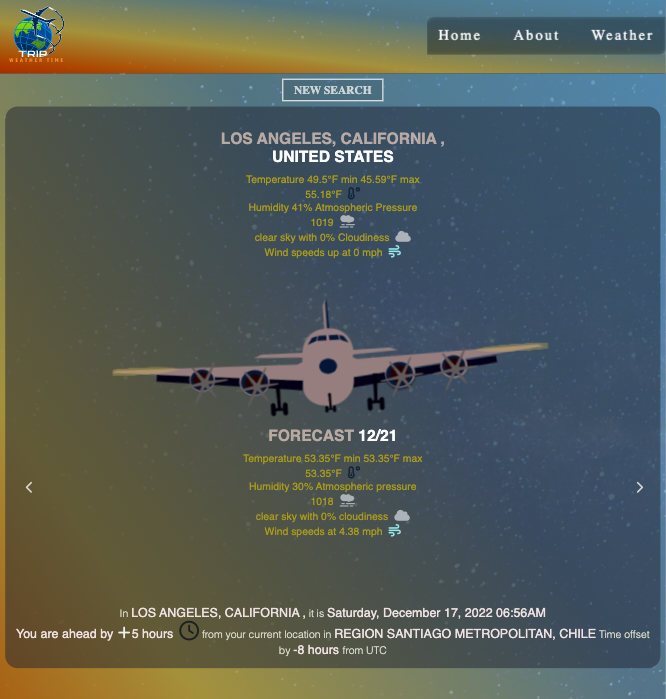

weather forecast, time difference and a sky-gazing view
Have you ever wanted to travel abroad or out-of-state but were unsure of the time difference or weather conditions, or just wanted to see what the sky presently looks like in another country?

This unique weather-query website is designed specifically for those long-distance travelers. It returns a five-day forecast, time difference from current location to queried location, and weather results coded into the background visually emulating a sky-gazing view.
Under the hood, this page makes various API calls, it uses linear-gradients and SVG graphics. The first fetch request gets geoLocation coordinates of search. The second API call fetches weather forecast and time. The third API call, queries the time of your current location based on user IP address. Once all fetch requests are completed, it creates the HTML elements on the `fly` —pun intended— and returns the forecast, time difference, and an SVG-animated commercial plane. At last, using Javascript and linear-gradients a CSS-generated background will display a sky view matching the time of day and weather result from the given search query.